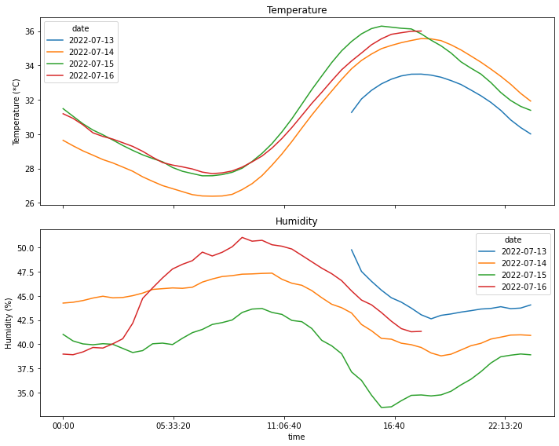

Plotting temperature and humidity sensor readings with matplotlib
In this notebook, I will take a look at the readings from a DHT22 temperature-humidity sensor that I have left for a few days in a couple of locations in my house. As I’m writing this, we’re in the middle of the summer and there’s a heatwave going on, so the average temperatures will be pretty high.
By gathering data over the course of different days and by varying some conditions (e.g. opening certain windows), I’m hoping to find what’s the best way of cooling down the house at night, and keeping it cool during the day.
Libraries
Let’s start by talking about the libraries. Nothing pretty fancy here. pandas is there to put all the log readings into a dataframe, matplotlib and seaborn are graph visualization libraries for plotting data and datetime is there because I am working with timeseries. matplotlib.dates is used to customize some of the plotting parameters when handling dates.
import pandas as pd
import matplotlib.pyplot as plt
import seaborn as sns
import datetime
import matplotlib.dates as mdatesPart 1: the attic
Reading and cleaning the data
The temperature/humidity readings are stored in a csv file, together with the timestamp of the reading. Let’s start with the readings coming from the sensor left in the attic.
df = pd.read_csv('log.txt', header=0, names=['date','time', 'temperature', 'humidity'])The next few commands are there for turning the datetime into a more manageable format, which helps with plotting later. In particular, since the date and time columns are read as strings, the following lines convert them back into datetime format.
Then, the two are combined back into a singular datetime object for each row, with the entire timestamp.
df['time'] = df['time'].apply(datetime.time.fromisoformat)
df['date'] = df['date'].apply(datetime.date.fromisoformat)
df['datetime'] = pd.to_datetime([datetime.datetime.combine(a, b) for a,b in zip(df['date'], df['time'])])Now that I have a unique datetime index for every row, I can reset the index of the dataframe so that it uses the timestamp, rather than the regular ID.
The next step is resampling the timeline in order to reduce the number of readings, and to reduce the effect of anomalous readings. In this example, readings are grouped every 30 minutes, then they are aggregated by using the mean function.
Out of curiosity, and following a procedure I am not completely sure of, I am trying to plot the variance of the measurement over the same interval of time by aggregating with var, then plotting using the fill_between function.
# Resetting the index so that it uses the datetime, then aggregating according to mean and variance.
df_resampled = df.set_index('datetime').resample('30Min').mean()
df_var = df.set_index('datetime').resample('30Min').var()Time for the first plots. Here, I am plotting all the readings from the moment I activated the process, to the moment I saved it on disk to study the readings. To better distinguish between days, I am searching for the timestamps with time (0,0) (i.e. midnight), then I’m saving them in the variable midnight.
The command df_resampled.index.time==datetime.time(0,0) looks in the .time attribute of the datetime objects in the index and checks if the value contained therein is the same as datetime.time(0,0).
The first plot will show the timeseries of temperature and humidity, along with their (supposed) error bars. Since I’m using the same code for plotting both temperature and humidity, I wrote a simple function that takes as input the dataframe and the variable of interest, then prepares the resulting plot.
def plot_overall_var(df, tgt_var, df_var=None):
def get_bounds(df_base, df_var, column):
'''Preparing the upper and lower bounds by adding the variance
'''
y1 = df_base[column] + df_var[column]
y2 = df_base[column] - df_var[column]
return y1,y2
# Setting the size of the figure
fig = plt.figure(figsize=(16,4))
# Plotting the main line
ax = sns.lineplot(x=df_resampled.index, y=df_resampled[tgt_var])
plt.title(tgt_var)
# If provided, adding the variance
if df_var is not None:
yhigh, ylow = get_bounds(df_resampled, df_var, tgt_var)
plt.fill_between(df_resampled.index, ylow, yhigh, color='orange')
# Plotting vertical lines for highlighting the change of date
midnight = df_resampled.loc[df_resampled.index.time==datetime.time(0,0)].index
for day in midnight:
plt.axvline(day)
# Plotting ticks every 3 hours
_ = ax.xaxis.set_major_locator(mdates.HourLocator(interval=3))
# Rotating the ticks
ax.xaxis.set_tick_params(rotation=60)
# Tightening the result
plt.tight_layout()
plot_overall_var(df_resampled, 'temperature', df_var)
plot_overall_var(df_resampled, 'humidity', df_var)
Plotting results by day
In the next section, I will reshape the data with the objective of comparing the readings gathered in different days, to look for potential similarities and differences. To do so, I’ll first split the datetime index into columns date and time, then I will pivot the table so that the new index will be time, and the columns will report temperature and humidity for each day. As you’ll notice, a bunch of values are missing and get with the value NaN: this is due to the fact that I started the data collection around 14h on July 13th.
df_resampled['date'] = df_resampled.index.date
df_resampled['time'] = df_resampled.index.time
df_pivot=df_resampled.pivot(index='time', columns='date')
# Displaying only the first 10 rows
df_pivot.head(10)| temperature | humidity | |||||||
|---|---|---|---|---|---|---|---|---|
| date | 2022-07-13 | 2022-07-14 | 2022-07-15 | 2022-07-16 | 2022-07-13 | 2022-07-14 | 2022-07-15 | 2022-07-16 |
| time | ||||||||
| 00:00:00 | NaN | 29.640351 | 31.483636 | 31.187500 | NaN | 44.256141 | 41.012727 | 38.969643 |
| 00:30:00 | NaN | 29.321428 | 31.041071 | 30.917544 | NaN | 44.341071 | 40.332143 | 38.903509 |
| 01:00:00 | NaN | 29.025000 | 30.600000 | 30.540741 | NaN | 44.517857 | 40.024561 | 39.196297 |
| 01:30:00 | NaN | 28.775000 | 30.238182 | 30.076786 | NaN | 44.776786 | 39.936363 | 39.655357 |
| 02:00:00 | NaN | 28.519298 | 29.961403 | 29.866071 | NaN | 44.966667 | 40.045614 | 39.594642 |
| 02:30:00 | NaN | 28.323214 | 29.657143 | 29.710527 | NaN | 44.798214 | 39.983929 | 40.035088 |
| 03:00:00 | NaN | 28.083929 | 29.340000 | 29.500000 | NaN | 44.835714 | 39.558182 | 40.560714 |
| 03:30:00 | NaN | 27.839286 | 29.054386 | 29.285714 | NaN | 45.023214 | 39.131579 | 42.167857 |
| 04:00:00 | NaN | 27.514286 | 28.794643 | 29.000000 | NaN | 45.291072 | 39.330357 | 44.741072 |
| 04:30:00 | NaN | 27.251786 | 28.581818 | 28.656364 | NaN | 45.671428 | 40.038182 | 45.830909 |
Here I’m plotting the values of temperature and humidity recorded on each day.
time_range = pd.timedelta_range(start='1 day', end='2 days', freq='3H')fig, axs = plt.subplots(2,1, sharex=True, figsize=(10, 8))
df_pivot=df_resampled.pivot(index='time', columns='date')
a=df_pivot['temperature'].plot(title='Temperature', ylabel='Temperature (*C)', ax=axs[0], legend=True)
df_pivot=df_resampled.pivot(index='time', columns='date')
df_pivot['humidity'].plot(ax=axs[1], title='Humidity', ylabel='Humidity (%)', legend=True)
# plt.legend([a.lines])
plt.tight_layout()
plt.savefig('temp-humid-attic.png', transparent=False, facecolor='white')
Finding the daily extremes
In this section, I will be parsing the data and look for the daily extremes (maximum and minimum) for temperature and humidity, and the time at which they occurred.
# Simple dictionary for formatting the unit of measurement that will be printed
d_form = {'temperature': '*C', 'humidity': '%'}# Grouping by day
for idx, day_g in df_resampled.groupby('date'):
print(f'Date: {idx}')
# Maximum
# idxmax returns the position of the maximum value
aggr_i = day_g[['temperature', 'humidity']].aggregate(pd.Series.idxmax)
aggr_m = day_g[['temperature', 'humidity']].aggregate(pd.Series.max)
# Putting the values together for pretty printing
df_t=pd.concat([aggr_i, aggr_m], axis=1)
for i, val in df_t.iterrows():
print(f'Max {i:>12} = {val[1]:.1f} {d_form[i]:>2} at {val[0].time()}')
# Minimum
# idxmax returns the position of the maximum value
aggr_i = day_g[['temperature', 'humidity']].aggregate(pd.Series.idxmin)
aggr_m = day_g[['temperature', 'humidity']].aggregate(pd.Series.min)
# Putting the values together for pretty printing
df_t=pd.concat([aggr_i, aggr_m], axis=1)
for i, val in df_t.iterrows():
print(f'Min {i:>12} = {val[1]:.1f} {d_form[i]:>2} at {val[0].time()}')Date: 2022-07-13
Max temperature = 33.5 *C at 18:00:00
Max humidity = 49.8 % at 14:30:00
Min temperature = 30.0 *C at 23:30:00
Min humidity = 42.6 % at 18:30:00
Date: 2022-07-14
Max temperature = 35.6 *C at 18:00:00
Max humidity = 47.4 % at 10:30:00
Min temperature = 26.4 *C at 07:30:00
Min humidity = 38.8 % at 19:00:00
Date: 2022-07-15
Max temperature = 36.3 *C at 16:00:00
Max humidity = 43.7 % at 10:00:00
Min temperature = 27.6 *C at 07:00:00
Min humidity = 33.4 % at 16:00:00
Date: 2022-07-16
Max temperature = 36.0 *C at 18:00:00
Max humidity = 51.1 % at 09:00:00
Min temperature = 27.7 *C at 07:30:00
Min humidity = 38.9 % at 00:30:00Part 2: the bedroom
In this section, I will be repeating most of what was done in Part 1: the main difference will be the location of the sensor. Rather than keeping it in the attic, in fact, I was keeping this on the desk in my bedroom. In particular, the sensor was exposed to the heat coming from a pretty chonky desktop PC, as well as two monitors, and it is positioned close to a window.
df = pd.read_csv('readings-room.csv', header=0, names=['date','time', 'temperature', 'humidity'])df['time'] = df['time'].apply(datetime.time.fromisoformat)
df['date'] = df['date'].apply(datetime.date.fromisoformat)
df['datetime'] = pd.to_datetime([datetime.datetime.combine(a, b) for a,b in zip(df['date'], df['time'])])# Resetting the index so that it uses the datetime, then aggregating according to mean and variance.
df_resampled = df.set_index('datetime').resample('30Min').mean()
df_var = df.set_index('datetime').resample('30Min').var()Below, I’m plotting the overall temperature and humidity readings. Unlike in the case of the attic, however, the variance is far more larger, which leads to a plot that is almost unreadable in the case of humidity. For this reason, I am also plotting the graphs without added bands by calling plot_overall_var without the df_var variable.
plot_overall_var(df_resampled, 'temperature', df_var)
plot_overall_var(df_resampled, 'humidity', df_var)
plot_overall_var(df_resampled, 'temperature')
plot_overall_var(df_resampled, 'humidity')
Plotting results by day
df_resampled['date'] = df_resampled.index.date
df_resampled['time'] = df_resampled.index.time
df_pivot=df_resampled.pivot(index='time', columns='date')
# Displaying only the first 10 rows
df_pivot.head(10)| temperature | humidity | |||||
|---|---|---|---|---|---|---|
| date | 2022-07-06 | 2022-07-07 | 2022-07-08 | 2022-07-06 | 2022-07-07 | 2022-07-08 |
| time | ||||||
| 00:00:00 | NaN | NaN | 24.601786 | NaN | NaN | 60.225000 |
| 00:30:00 | NaN | 26.792857 | 23.985965 | NaN | 62.985715 | 61.821053 |
| 01:00:00 | NaN | 26.937255 | 23.458929 | NaN | 62.368627 | 63.941071 |
| 01:30:00 | NaN | 26.825000 | 22.831579 | NaN | 62.901786 | 66.178947 |
| 02:00:00 | NaN | 26.421053 | 21.867273 | NaN | 63.638596 | 69.143637 |
| 02:30:00 | NaN | 26.396428 | 22.728572 | NaN | 64.705357 | 65.946429 |
| 03:00:00 | NaN | 26.171930 | 22.787719 | NaN | 64.521053 | 64.991228 |
| 03:30:00 | NaN | 25.918965 | 22.864285 | NaN | 65.108621 | 65.960714 |
| 04:00:00 | NaN | 25.978571 | 23.108929 | NaN | 64.525000 | 66.139285 |
| 04:30:00 | NaN | 25.794736 | 23.110527 | NaN | 65.349123 | 66.324561 |
val_idxmax=df_pivot[['temperature', 'humidity']].apply(pd.Series.idxmax)
val_max=df_pivot[['temperature', 'humidity']].apply(pd.Series.max)df_concat = pd.concat([val_idxmax, val_max], axis=1).reset_index().pivot(index='date', columns='level_0')
df_concat| 0 | 1 | |||
|---|---|---|---|---|
| level_0 | humidity | temperature | humidity | temperature |
| date | ||||
| 2022-07-06 | 18:30:00 | 17:00:00 | 67.537736 | 28.174419 |
| 2022-07-07 | 07:30:00 | 17:00:00 | 70.470175 | 28.641072 |
| 2022-07-08 | 05:00:00 | 17:30:00 | 70.805263 | 27.100000 |
mi = pd.MultiIndex.from_product([['humidity', 'temperature'], ['timeat', 'value']])rows=[]
for idx, row in df_concat.iterrows():
t = [row[idx][variable] for variable in ['humidity', 'temperature'] for idx in [0,1] ]
rows.append([idx] + t)df_new = pd.DataFrame.from_records(rows)
df_new=df_new.set_index(0)
df_new.index.rename('date', inplace=True)
df_new.columns = mi
df_new| humidity | temperature | |||
|---|---|---|---|---|
| timeat | value | timeat | value | |
| date | ||||
| 2022-07-06 | 18:30:00 | 67.537736 | 17:00:00 | 28.174419 |
| 2022-07-07 | 07:30:00 | 70.470175 | 17:00:00 | 28.641072 |
| 2022-07-08 | 05:00:00 | 70.805263 | 17:30:00 | 27.100000 |
time_range = pd.timedelta_range(start='1 day', end='2 days', freq='3H')fig, axs = plt.subplots(2,1, sharex=True, figsize=(10, 8))
df_pivot=df_resampled.pivot(index='time', columns='date')
a=df_pivot['temperature'].plot(title='Temperature', ylabel='Temperature (*C)', ax=axs[0], legend=True)
df_pivot=df_resampled.pivot(index='time', columns='date')
df_pivot['humidity'].plot(ax=axs[1], title='Humidity', ylabel='Humidity (%)', legend=True)
# plt.legend([a.lines])
plt.tight_layout()
plt.savefig('temp-humid-bedroom.png', transparent=False, facecolor='white')Finding the daily extremes
# Simple dictionary for formatting the unit of measurement that will be printed
d_form = {'temperature': '*C', 'humidity': '%'}# Grouping by day
for idx, day_g in df_resampled.groupby('date'):
print(f'Date: {idx}')
# Maximum
# idxmax returns the position of the maximum value
aggr_i = day_g[['temperature', 'humidity']].aggregate(pd.Series.idxmax)
aggr_m = day_g[['temperature', 'humidity']].aggregate(pd.Series.max)
# Putting the values together for pretty printing
df_t=pd.concat([aggr_i, aggr_m], axis=1)
for i, val in df_t.iterrows():
print(f'Max {i:>12} = {val[1]:.1f} {d_form[i]:>2} at {val[0].time()}')
# Minimum
# idxmax returns the position of the maximum value
aggr_i = day_g[['temperature', 'humidity']].aggregate(pd.Series.idxmin)
aggr_m = day_g[['temperature', 'humidity']].aggregate(pd.Series.min)
# Putting the values together for pretty printing
df_t=pd.concat([aggr_i, aggr_m], axis=1)
for i, val in df_t.iterrows():
print(f'Min {i:>12} = {val[1]:.1f} {d_form[i]:>2} at {val[0].time()}')Date: 2022-07-06
Max temperature = 28.2 *C at 17:00:00
Max humidity = 67.5 % at 18:30:00
Min temperature = 26.7 *C at 21:30:00
Min humidity = 60.8 % at 22:00:00
Date: 2022-07-07
Max temperature = 28.6 *C at 17:00:00
Max humidity = 70.5 % at 07:30:00
Min temperature = 24.4 *C at 23:00:00
Min humidity = 58.5 % at 23:30:00
Date: 2022-07-08
Max temperature = 27.1 *C at 17:30:00
Max humidity = 70.8 % at 05:00:00
Min temperature = 21.7 *C at 05:00:00
Min humidity = 60.2 % at 00:00:00Part 3: Concluding
Let’s wrap up the post by summarizing what was shown, then making some observations.
Overall, this was an interesting exercise to play around with timeseries, which is a format I haven’t really considered during my PhD. I had to figure out how to handle them using the functions provided by pandas, then how to use matplotlib to prepare the graphs while getting around the shortcomings of my data-gathering setup. In particular, seaborn was far more stubborn than I expected and I wasn’t able to find a proper way of wrangling the correct plots with the library.
Regarding the actual data, it’s interesting to see the differences between the readings coming from the two locations. They were gathered over different time periods, and it was far hotter while I was recording the temperature in the attic: this makes direct comparisons not very meaningful, due to how different the external conditions were. Still, the difference in readings between the room and the attic can be explained by the fact that there is no activity in the attic; on the other hand, the sensor in the bedroom picked up on both my activity there: this involved the use of a desktop PC and multiple monitors and additional devices, coupled with the fact that windows can generate a noticeable breeze that goes through the entire top floor of the building. This goes to show that a good ventilato helps a lot with cooling down a hot interior, and that electronic devices work directly against that!
I’m still working on building a different temperature sensor, and possibly something more complex that would allow to gather further information (a weather station maybe?), so I will definitely come back to this subject at some point in the future.
Appendix: Other (unsuccessful) attempts
In this section I’m gathering some additional methods I tried while working on the points shown above. I’m adding these both as a note to myself of what doesn’t work, and for readers to see what can happen while trying stuff out.
From my understanding, part of the reason why these methods did not work quite as well as I hoped is due to the fact that I’m working with datetime objects, rather than “regular” indexing. This results in some funky behavior in some cases.
Plotting struggles
The pandas.DataFrame.melt function allows to obtain a “long form” version of a dataframe that pivots around some columns, while keeping other columns as variables. This can be extremely useful for plotting different variables on the same plot using libraries such as seaborn, which is what I will be trying in a moment.
df_melted = df_resampled.melt(id_vars=['time', 'date'], value_vars=['temperature'])
df_melted['time'] = df_melted['time'].apply(datetime.time.isoformat)
display(df_melted)
# df_melted = df_melted.sort_values(['date', 'time'])| time | date | variable | value | |
|---|---|---|---|---|
| 0 | 14:30:00 | 2022-07-13 | temperature | 31.266667 |
| 1 | 15:00:00 | 2022-07-13 | temperature | 32.048214 |
| 2 | 15:30:00 | 2022-07-13 | temperature | 32.547368 |
| 3 | 16:00:00 | 2022-07-13 | temperature | 32.926316 |
| 4 | 16:30:00 | 2022-07-13 | temperature | 33.198245 |
| … | … | … | … | … |
| 147 | 16:00:00 | 2022-07-16 | temperature | 35.548214 |
| 148 | 16:30:00 | 2022-07-16 | temperature | 35.810526 |
| 149 | 17:00:00 | 2022-07-16 | temperature | 35.903573 |
| 150 | 17:30:00 | 2022-07-16 | temperature | 35.987719 |
| 151 | 18:00:00 | 2022-07-16 | temperature | 36.000000 |
152 rows × 4 columns
A “melted” dataframe can be plotted fairly easily using a command such as the one below. Besides the x- and y-axes, it is possible to distinguish the lines by hue (in this case, different colors for different dates) and by style (different line style for different variables). Here, it does not make a lot of sense to plot humidity and temperature in the same plot, but it is useful for the sake of the example.
Something else to note in the plot below is that the x-axis starts at 14:30, then continues for 24 hours until 14:00 the next day: this is due to the fact that the data captured by the log is incomplete for the day of 2022-07-13. After searching around for a while, I wasn’t able to reset the ticks on the x-axis to make them work properly, so I had to look for some workarounds.
Indeed, the current plot shows a pretty major inconsistency at 0:00, which is when the date shifts from July 13th to July 14th, which is also why the orange line “jumps” below and seems to be a continuation of the blue line: this is exactly what that is!
fig = plt.figure(figsize=(12,4))
ax = sns.lineplot(data = df_melted, x='time', y='value', hue='date', style='variable')
ax.tick_params(rotation=90)It is possible to build a plot by using the full datetime object, rather than splitting by day, and the result is shown below:
df_melted = df_resampled.reset_index().melt(id_vars=['datetime'], value_vars=['temperature'])
display(df_melted)
fig = plt.figure(figsize=(12,4))
ax = sns.lineplot(data = df_melted, x='datetime', y='value')
ax.tick_params(rotation=90)| datetime | variable | value | |
|---|---|---|---|
| 0 | 2022-07-13 14:30:00 | temperature | 31.266667 |
| 1 | 2022-07-13 15:00:00 | temperature | 32.048214 |
| 2 | 2022-07-13 15:30:00 | temperature | 32.547368 |
| 3 | 2022-07-13 16:00:00 | temperature | 32.926316 |
| 4 | 2022-07-13 16:30:00 | temperature | 33.198245 |
| … | … | … | … |
| 147 | 2022-07-16 16:00:00 | temperature | 35.548214 |
| 148 | 2022-07-16 16:30:00 | temperature | 35.810526 |
| 149 | 2022-07-16 17:00:00 | temperature | 35.903573 |
| 150 | 2022-07-16 17:30:00 | temperature | 35.987719 |
| 151 | 2022-07-16 18:00:00 | temperature | 36.000000 |
152 rows × 3 columns
Now, this plot looks much clearer, however it’s not exactly what I wanted. For this reason, I decided to get rid of the offending data series (i.e. the incomplete series of readings from the first day) and plot the data for the remaining days. This isn’t really the best way of doing it, which is why I went for the solution in the first section of this post, but it gets the job done at least.
So, now my objective is selecting only the readings that start after the first day has ended, which can be done using either one of the two commands below, whose output is exactly the same.
df_resampled.index returns the index of the dataframe, which is in datetime format: this allows to compare it with a different datetime object that I am declaring (either fromisoformat(...) or date(...)). The comparison allows to find the datetime indices that occur after the given value, and keep only those.
df_1 =df_resampled.loc[df_resampled.index >= datetime.datetime.fromisoformat('2022-07-14 00:00:00')]
df_2 =df_resampled.loc[df_resampled.index.date > datetime.date(2022, 7,13)]
# Checking that the two indices are equal
all(df_1.index == df_2.index)TrueNow that there is a cleaner dataframe to plot, the usual lineplot function can be used to prepare the temperature and humidity comparisons. |
df_melted = df_1.melt(id_vars=['time', 'date'], value_vars=['temperature'], value_name='temp')
df_melted['time'] = df_melted['time'].apply(datetime.time.isoformat)
df_melted = df_melted.sort_values(['date', 'time'])
fig = plt.figure(figsize=(10,4))
ax = sns.lineplot(data = df_melted, x='time', y='temp', hue='date')
ax.tick_params(rotation=90)
df_melted = df_1.melt(id_vars=['time', 'date'], value_vars=['humidity'], value_name='hum')
df_melted['time'] = df_melted['time'].apply(datetime.time.isoformat)
df_melted = df_melted.sort_values(['date', 'time'])
fig = plt.figure(figsize=(10,4))
ax = sns.lineplot(data = df_melted, x='time', y='hum', hue='date')
ax.tick_params(rotation=90)Extracting extremes
After splitting the readings on a day-by-day basis using pivot, I looked for a way of getting the extremes using the same table. Turns out, this was far more complex than I thought, especially for printing them in an easy-to-read way.
Let’s start by taking a look at df_pivot again:
display(df_pivot.head())| temperature | humidity | |||||||
|---|---|---|---|---|---|---|---|---|
| date | 2022-07-13 | 2022-07-14 | 2022-07-15 | 2022-07-16 | 2022-07-13 | 2022-07-14 | 2022-07-15 | 2022-07-16 |
| time | ||||||||
| 00:00:00 | NaN | 29.640351 | 31.483636 | 31.187500 | NaN | 44.256141 | 41.012727 | 38.969643 |
| 00:30:00 | NaN | 29.321428 | 31.041071 | 30.917544 | NaN | 44.341071 | 40.332143 | 38.903509 |
| 01:00:00 | NaN | 29.025000 | 30.600000 | 30.540741 | NaN | 44.517857 | 40.024561 | 39.196297 |
| 01:30:00 | NaN | 28.775000 | 30.238182 | 30.076786 | NaN | 44.776786 | 39.936363 | 39.655357 |
| 02:00:00 | NaN | 28.519298 | 29.961403 | 29.866071 | NaN | 44.966667 | 40.045614 | 39.594642 |
This dataframe has a two-level header, with one half of the column covering the temperature on different days, and the other half recording humidity in the same periods of time. The index is a timeseries (not a datetime anymore, since the date is recorded in the columns).
# Extracting the extremes and saving them in dataframes
val_idxmax=df_pivot[['temperature', 'humidity']].apply(pd.Series.idxmax)
val_max=df_pivot[['temperature', 'humidity']].apply(pd.Series.max)# Concatenating dataframes
df_concat = pd.concat([val_idxmax, val_max], axis=1).reset_index().pivot(index='date', columns='level_0')
df_concat| 0 | 1 | |||
|---|---|---|---|---|
| level_0 | humidity | temperature | humidity | temperature |
| date | ||||
| 2022-07-13 | 14:30:00 | 18:00:00 | 49.774510 | 33.494737 |
| 2022-07-14 | 10:30:00 | 18:00:00 | 47.358182 | 35.562499 |
| 2022-07-15 | 10:00:00 | 16:00:00 | 43.696364 | 36.289285 |
| 2022-07-16 | 09:00:00 | 18:00:00 | 51.060715 | 36.000000 |
The result above kind of works, but is not very understandable: on the left, we have the time at which the extreme was measured and on the right we have the actual measured value.
It would be nicer to have a format similar to the original df_pivot, with temperature and humidity on top and the two variables timeat and measured value below. This can be done using a MultiIndex, which in this case I am building with the function .from_product. This function executes the cartesian product of the iterables passed as inputs and produces a MultiIndex object where each iterable represents a level in the multiindex.
mi = pd.MultiIndex.from_product([['humidity', 'temperature'], ['timeat', 'value']])
miMultiIndex([( 'humidity', 'timeat'),
( 'humidity', 'value'),
('temperature', 'timeat'),
('temperature', 'value')],
)At this point, I was looking for a way of massaging the columns and the index in order to make them match the multiindex, and this is what I came up with. Pretty ugly, but it works.
For each row in df_concat, I select the two columns of the multiindex (timeat and value, with labels 0 and 1 respectively), and then the specific variable (either humidity or temperature), so that the content of the list is:
[row[timeat][humidity], row[value, humidity], row[timeat][temperature], row[value][temperature]]Finally, I add the index (i.e. the date) to the list, then I build the dataframe starting from those records. In the new dataframe, the index is then set to use the date column added to the list.
This is one way of printing the values, however I later realized that this makes actual pretty printing far more difficult, and the entire process thus far was quite clunky and “unpythonic”, which is why I decided to something else.
rows=[]
for idx, row in df_concat.iterrows():
t = [row[i_][variable] for variable in ['humidity', 'temperature'] for i_ in [0,1] ]
rows.append([idx] + t)df_new = pd.DataFrame.from_records(rows)
df_new=df_new.set_index(0)
df_new.index.rename('date', inplace=True)
df_new.columns = mi
df_new| humidity | temperature | |||
|---|---|---|---|---|
| timeat | value | timeat | value | |
| date | ||||
| 2022-07-13 | 14:30:00 | 49.774510 | 18:00:00 | 33.494737 |
| 2022-07-14 | 10:30:00 | 47.358182 | 18:00:00 | 35.562499 |
| 2022-07-15 | 10:00:00 | 43.696364 | 16:00:00 | 36.289285 |
| 2022-07-16 | 09:00:00 | 51.060715 | 18:00:00 | 36.000000 |